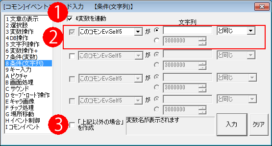

イベントコマンド 【条件（文字列）】
文字列の状態によって、イベントコマンドを最大4択に分岐させます。

【基本的な説明】
条件分岐は最大4択まで条件を指定することができます。条件判定は上から順番に行われます。
【各部の説明】
１．4変数を連動
このチェックをオンにしていると、条件分岐の対象とするプルダウンリストの4変数全てが一番上の変数と同じ変数に設定されます。
２．条件設定部
文字列変数と、それと比較する比較文字列、比較方法を指定します。比較文字列は手動で入力することもできますし、文字列変数から選択することもできます。
比較方法には以下の3通りが選択可能です。
・と同じ … 文字列変数と、比較文字列が完全に一致したときに分岐します。
・以外 … 文字列変数と、比較文字列が一部でも違うときに分岐します。
・を含む … 文字列変数に、比較文字列が一つ以上含まれていれば分岐します。
・が先頭にある … 文字列変数の先頭が、比較文字列であれば分岐します。
３．「上記以外の場合」を作成
どの条件にも当てはまらなかった場合の分岐先を作成します。